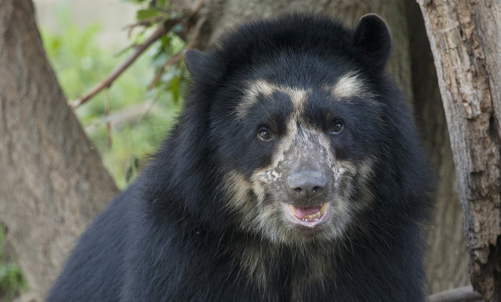

The Andean bear is unique. It's the only known bear to eat bromeliads and is the most vegetarian species of bear apart from the Giant Panda. Another name for the Andean bear is the Spectacled bear and its scientific name is Tremarctos Ornatus, meaning decorated bear.It lives in the cloud forests and uses its sharp claws to climb trees, where it eats and sleeps. One of the strangest things about the Andean bear is that it never hibernates and stays active all year because of the tropical climate in their range - from Bolivia to Venezuela.